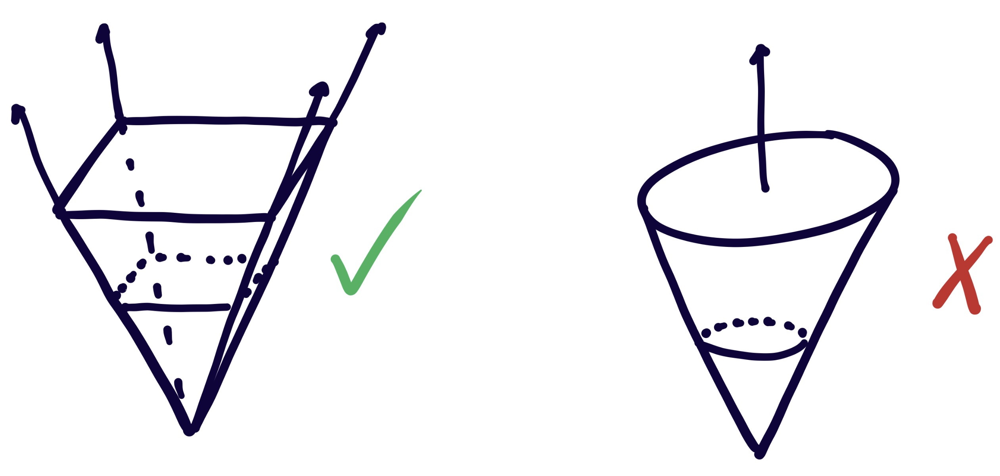

These notes correspond to the first meeting of the spring 2023 toric geometry learning seminar at UT Austin. For more information on the topics found here, please reference Fulton's An Introduction to Toric Varieties.
Recall from the primer that (C×)n=SpecC[x1,...,xn]x1x2...xn is called the algebraic torus. Qualitatively, toric varieties are varieties over C which 1. contain a copy of (C×)n and 2. whose geometry is largely determined by the torus. Here is a definition:
Definition: A toric variety is a variety X together with an open dense subset T⊆X isomorphic to (C×)n for some n such that the natural action T×T→T extends to an action T×X→X of T on X.
Some authors, including Fulton, require that toric varieties be normal. This is because the category of normal toric varieties is equivalent to the category of rational polyhedral fans, and the study of toric varieties is really about moving between these two categories. By omitting the normal hypothesis we get a slightly weaker correspondence, discussed later.
Example 1:(C×)n is of course itself an affine toric variety. The natural torus action is simply coordinate wise multiplication and the corresponding ring map is given by comultiplication:
Example 2:Cn is an affine toric variety, where the torus action T×X→X is again given by pointwise multiplication on coordinates.
Example 3:PCn is a toric variety. The torus is T={[z0:...:zn]∣zi=0} and the torus action is again given by pointwise multiplication, this time on homogeneous coordinates.
It should be remarked that a toric variety is actually a package
(X,TopenX,T×X→X)
consisting of the variety itself, a dominant open embedding of the torus and a specified torus action. There are typically many choices of embeddings and actions for any given toric variety, so it is standard practice to fix a choice of each before doing anything else.
Fix T≅(C×)n and consider the group of cocharacters or 1-parameter subgroups:
N=HomGrp(C×,T).
It turns out that N≅Zn, as proved in Humphrey's Linear Algebraic Groups in section 16.2 for instance. Given u=(u1,...,un)∈Zn=N the corresponding 1-parameter subgroup is
λu:C×→T,t↦(tu1,...,tun).
If we now take a toric variety X, we can consider the extension of λu to X given by composing with the torus embedding:
Ct×λuT↪X
where here the subscript on Ct× is simply there to emphasize that we have chosen a coordinate t on C× with respect to which λu is defined. If we now consider extending λu to C we can ask: what is the limit as t→0?
Example: Suppose X=Pz0,z1,z22 and choose u=(a,b)∈Z2. We have several different cases to consider:
If u0,u1>0 then [tu0:tu1:1]t→0[0:0:1].
If u0>u1,u1<0 then [tu0:tu1:1]=[tu0−u1:1:t−u1]t→0[0:1:0]
If u0<u1,u0<0 then [tu0:tu1:1]=[1:tu1−u0:t−u0]t→0[1:0:0]
If u0>u1,u1=0 then [tu0:tu1:1]=[tu0:1:1]t→0[0:1:1]
If u0=0,u1>u0 then [tu0:tu1:1]=[1:tu1:1]t→0[1:0:1]
If 0>u0=u1 then [tu0:tu1:1]=[tu0−u1:tu1−u1:t−u1]t→0[1:1:0]
If u0=u1=0 then [tu0:tu1:1]=[1:1:1].
If we partition N=Z2 into regions where choices of u give the same limit point, then we get a fan:
PC2" />
We can dually write this object as a convex polytope:
Now consider the torus orbit of each of these points. We write down three of them:
T⋅[0:0:1]={[0:0:z0]∣z0=0}=[0:0:1],
T⋅[1:0:1]={[z0:0:z2]∣z0,z2=0},
T⋅[1:1:1]={[z0:z1:z2]∣z0,z1,z2=0} etc.
In particular, the torus orbits of these seven points do not intersect and their union covers PC2. The fan tells us how the torus action partitions the underlying toric variety!
There is one other thing I'd like to point out here. Notice how there are three "2-dimensional" components of the fan, three "1-dimensional" components and one "0-dimensional" component namely the origin. These components are called cones, and their dimension relates to the dimension of their torus orbits in the following way. If σ is a d-dimensional cone with a corresponding point Pσ, then T⋅Pσ is a dimX−dimσ subspace of X. In our case, the orbits of the points corresponding to the 2-dimensional cones are just points, the orbits of the 1-dimensional cones become copies of PC1 and the action of T on the origin recovers the entire torus. This phenomenon will be explored further when we discuss the "orbit cone correspondence".
I hope that you are now adequately convinced that fans connect in some interesting way to toric varieties. In this section, we'll cover the basics of the polyhedral geometry needed to understand this connection.
Fix a lattice N≅Zn and let NR=N⊗ZR≅Rn. We first define polyhedral cones:
Definition: A convex polyhedral cone in NR is a set
σ={a1v1+...+asvs∈NR∣ai≥0}
generated by any finite set of vectors v1,...,vs∈NR. Such vectors are called the generators of σ, and we sometimes write spanR≥0(v1,...,vs) to denote σ. In addition, σ is said to be
rational if each generator has integer coordinates, i.e. if vi∈N for all 1≤i≤s
strictly convex if σ does not contain a line The dimension of σ is denoted dimσ and is defined to be the dimension of R⋅σ=σ+(−σ) as a linear space over R.
Note that the word "polyhedra" refers to the finite generating set of σ: this assumption disallows cones which look like ice cream cones.

In the above image, only the left cone is polyhedral.
We also make frequent use of the dual lattice M=HomZ(N,Z)≅Zn and the dual vector space MR=M⊗ZR≅Rn. This is where the dual cone lives:
Definition: If σ is a convex polyhedral cone in NR, then the dual cone is the set
σ∨:={u∈M_R∣⟨u,v⟩≥0 for all v∈σ}.
The following fact from the theory of convex sets is crucial:
Fact: If σ is a convex polyhedral cone and v0∈σ then there is some u0∈σ∨ such that ⟨u0,v0⟩<0.
From here we can immediately get the duality theorem.
Theorem (Duality Theorem): If σ is a convex polyhedral cone, then (σ∨)∨=σ.
We now run through a few more basic definitions and facts regarding polyhedral cones.
Definition: Let σ be a polyhedral cone. A face of σ is the intersection of σ with any supporting hyperplane:
τ=σ∩u⊥={v∈σ∣⟨u,v⟩=0}
for some u∈σ∨.
Any face τ of σ is again a polyhedral cone. A cone σ is a face of itself, as seen by taking u=0 in the above definition, while every other face is referred to as a proper face.
Fact: Any intersection of faces is also a face.
Proof:
⋂(σ∩ui⊥)=σ∩(∑ui)⊥.
□
The final fact we will need is the following:
Fact: If σ is a rational convex polyhedral cone then σ∨ is a rational convex polyhedral cone.
This is not difficult to prove; one can easily find a procedure by which to find generators for σ∨ given the generators of σ and use this to prove both rationality and convexity. We refer the reader to page 12 of Fulton's book.
This gives us Gordan's lemma, which will be critical to our construction of toric varieties from cones.
Proposition (Gordon's Lemma): If σ is a rational convex polyhedral cone, then Sσ=σ∨∩M is a finitely generated semigroup.
 " />
" />